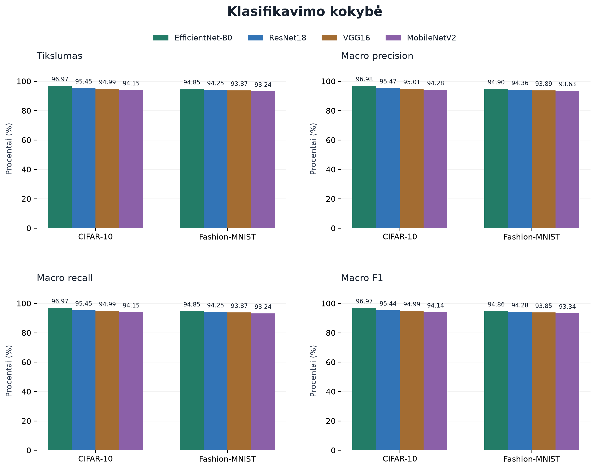
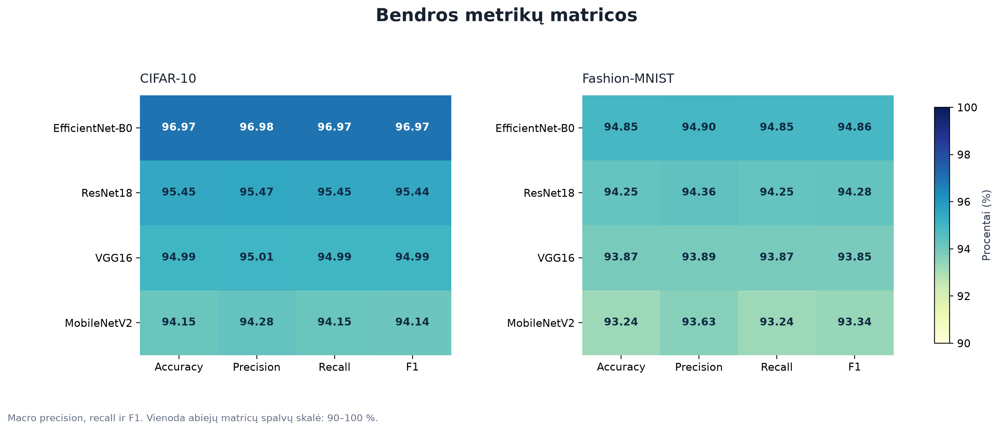
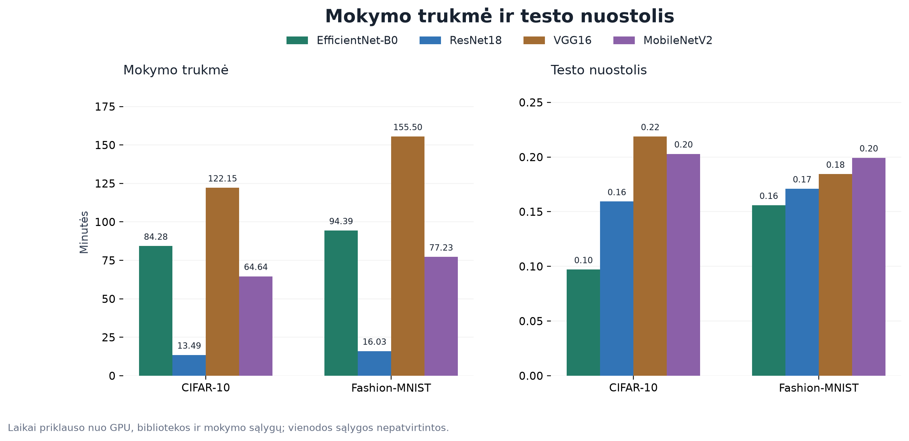
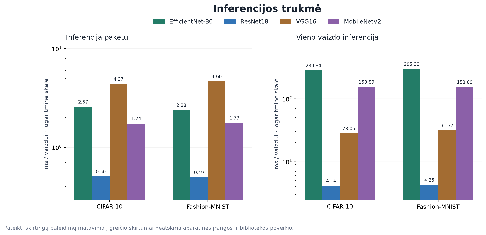
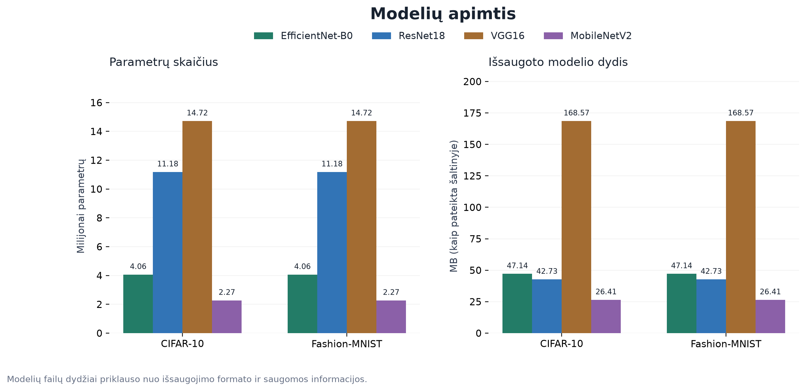
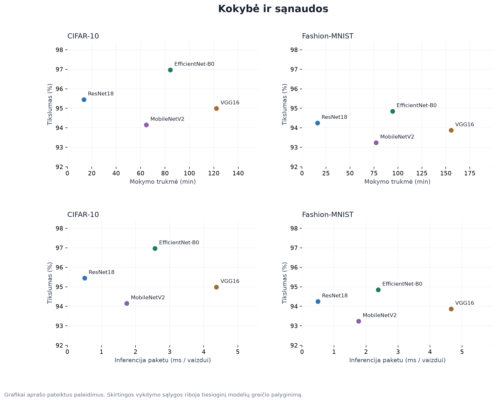

Keturi modeliai · du duomenų rinkiniai
EfficientNet-B0, ResNet18, VGG16 ir MobileNetV2 rezultatai vienoje ataskaitoje.
Visi grafikai viename PDF
Bendra suvestinė
CSV ·
JSON
| Modelis | Duomenų rinkinys | Accuracy | F1 (macro) | Mokymo laikas (min) |
| EfficientNet-B0 | CIFAR-10 | 96.97 % | 96.97 % | 84.28 |
| ResNet18 | CIFAR-10 | 95.45 % | 95.44 % | 13.49 |
| VGG16 | CIFAR-10 | 94.99 % | 94.99 % | 122.15 |
| MobileNetV2 | CIFAR-10 | 94.15 % | 94.14 % | 64.64 |
| EfficientNet-B0 | Fashion-MNIST | 94.85 % | 94.86 % | 94.39 |
| ResNet18 | Fashion-MNIST | 94.25 % | 94.28 % | 16.03 |
| VGG16 | Fashion-MNIST | 93.87 % | 93.85 % | 155.50 |
| MobileNetV2 | Fashion-MNIST | 93.24 % | 93.34 % | 77.23 |
Palyginimo ribos
Pateiktuose kursiokų failuose yra tik galutinės suvestinės. Nėra jų epochų istorijos,
klasių ataskaitų, tikrųjų ir prognozuotų žymių ar skaitinių klaidų matricų.
Todėl bendri mokymo kreivių, F1 pagal klases ir klaidų matricų grafikai nesudaryti.
Rodomos metrikų matricos yra modelių ir metrikų lentelės.
GPU, bibliotekos ir laiko matavimo sąlygos nesuvienodintos. VGG16 šaltinyje nurodytas
paketo dydis 16, EfficientNet-B0 — 64; MobileNetV2 suvestinėje paketo dydžio nėra.
Failų dydžiai taip pat priklauso nuo saugojimo formato.
Klasifikavimo kokybė
Visų modelių tikslumas, macro precision, recall ir F1 abiem duomenų rinkiniams.
PDF
Bendros metrikų matricos
Eilutėse — modeliai, stulpeliuose — metrikos. Reikšmės procentais.
PDF
Mokymo trukmė ir testo nuostolis
Pateiktų paleidimų matavimai. Aparatinė įranga ir bibliotekos nesuvienodintos.
PDF
Inferencijos trukmė
Paketo ir vieno vaizdo matavimai rodomi atskirai bendroje figūroje; ašys logaritminės.
PDF
Modelių apimtis
Parametrų skaičius ir pateiktų modelių failų dydžiai. Failų formatai gali skirtis.
PDF
Kokybė ir sąnaudos
Tikslumas lyginamas su mokymo trukme ir inferencijos paketu trukme.
PDF